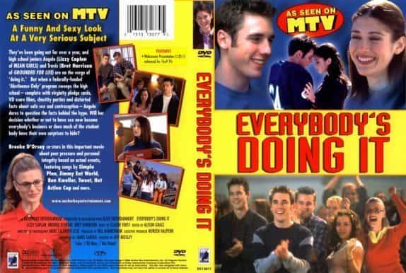

We are all witnesses to online dating evolution. At first, it was primarily for single mothers who had an easy way to find themselves a new beta to provide for her and her kids. In the 90’s, the mail order bride was the most popular on the online dating scene, but web sites like Match.com and OkCupid got very large fairly quickly.
By 2010, online dating websites became the best place for women to get validation from betas and to choose top 20% of guys to have sex with.
Today, classic dating sites are slowly but surely dying while sugar baby sites are on the rise. Not only has their user base grown tremendously over the past few years but this kind of relationship has been more and more pushed as normal into the mainstream media. Even feminists found a way to support it. Owners of these sites are speaking freely on Oprah, CNN, and others, doing what they know best, marketing their websites.
Thanks to the unbalanced sexual marketplace and declining public morals, being a sugar baby is a new way to monetize your body as a woman.
But what are the consequences? Men have to ask ourselves what will happen when every hot girl realizes she can get $1000-5000 a month selling her body without any social repercussions (because she won’t be seen as a prostitute, but as a “sugar baby”). If you are tempted to think that easy lays on Tinder are going to last forever, this is what you need to know.
1. Sugar daddy dating sites are growing at a fast pace
Going back to 2012, the main sugar daddy dating site (Seeking Arrangement) was still in the shadows. And to be honest, it was suspicious. I got a lot of messages from girls in other countries far from the US that I thought were fake. And I still do. But not in the sense that they were bot or men, but that those girls are paid to message you, especially when your membership is about to end.
Fast forward to today, the site looks way better with a new design, there are no fake messages and the best part is that now you have a lot of options. If you sign up, I guarantee that you will find at least one girl you know from Tinder or elsewhere. And I also guarantee that she is going to be ten times more receptive.
As far as the statistic goes, the site had only 2 million signed up globally in 2012. This year it has nearly ten million. Out of ten million, 8 million are sugar babies. 3.25 million users are in the United States only. Are we witnessing an all-out boom in casual mass prostitution encouraged by the media?
2. It’s Becoming Mainstream

The sugar baby concept is slowly but surely pouring into the mainstream entertainment media and pop culture. It started in 2014 when Brandon Wade (owner of Seeking Arrangement), with two sugar babies, talked on The View with Jenny McCarthy. They talked about being a prostitute on live TV and people applauded them.
When it comes to serial programming, the TV show Easy has an episode which basically promotes being a sugar baby. The main character is, of course, the positive feminist activist and writer (but also a prostitute) who lives in Manhattan and whose lifestyle is funded by her beta-box “side-hustles.”
There are many more examples, like the popular female rapper Cardi B who basically raps about being a sugar baby and “making money.” One of her songs have around half a billion views now. Let that sink in.
3. Not every girl knows about it, but once they do…
If you are using Tinder, you probably stumbled into girls that put in account details of Venmo, a mobile paying service. They feel no shame in turning men into their personal ATMs.
But would these girls ask for $10 if they only knew how to google “sugar daddy dating”? What are they going to do when they find out they can find a sugar daddy that will give them $1000 a month just for their company?
Once good looking girls realize how much money they can make and how their lifestyle can be improved by monetizing their body, most will simply be unable to resist the temptation.
4. Most Guys Are Tired Of Regular Online Game

For those of you that aren’t lazy and have been working out regularly, it’s quite easy to get good pictures, become complacent, and then rely solely on online game since you can technically approach girls until you score. But let’s face it, in the regular online game, for the most part, you are just a guy that gives her temporary validation. As soon as she feels validated, you are no longer interesting.
It was determined that a man of average attractiveness would be liked by one out of 115 women on Tinder. It’s similar with OK Cupid. So, what about men that don’t get matches? Are they going to get tired of this? Are they going to think that they can have much more success being a sugar daddy on other dating websites? Or maybe they will go the salt daddy route (a fake sugar daddy who lies about his net worth and don’t pay girls after sex).
5. Student Debt

There is no way to escape a simple fact that student debt loan is now around 1.5 trillion dollars, spread out among 44 million borrowers of which two-thirds are women.
When you register on SA, you will certainly notice that the number of female students using this app is massive. And they all want one thing, “a little financial help to finish my studies.” Money that was supposed to go for paying the debt probably went on something useless, so when the devil comes for what’s his, they are relentlessly trying to find out a way to keep up with the high lifestyle and still be able to solve their debt problem. Finding a sugar daddy or being an escort is a perfect way to do it.
Conclusion
Make no mistake, the sugar revolution is coming. I have already accepted that and if you also want to adapt to this massive shock to the sexual marketplace, instead of focusing on the past, make sure to check out my review of Seeking Arrangement.
Read More: How To Meet Women Through Sugar Daddy Dating Sites